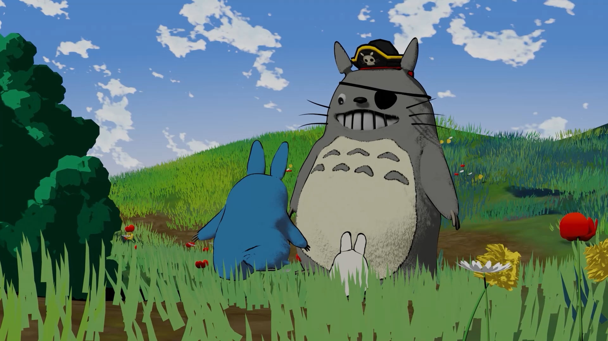
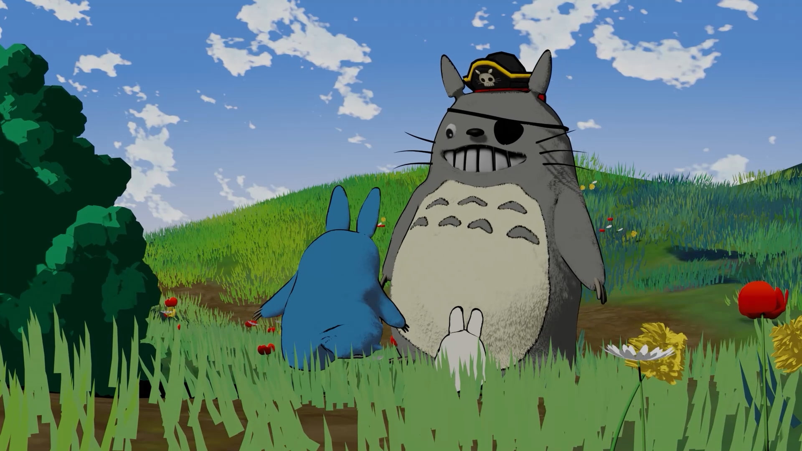

About
The short film was created using Blender, a 3D modeling and
animation software. The narrative style is inspired by Studio
Ghibli.
Totoro, in his pirate guise, is forced to face harsh weather
conditions during one of his adventures: rain, rough seas, and
strong winds. After overcoming the storm, he reaches his
destination, a small, peaceful island, where he finds his friends,
Chu and Chibi.
The characters, objects, and environments were modeled in a stylized
yet realistic and evocative manner. We carefully crafted the
materials, color palette, and sound design, as well as the animation
of natural phenomena.
 
